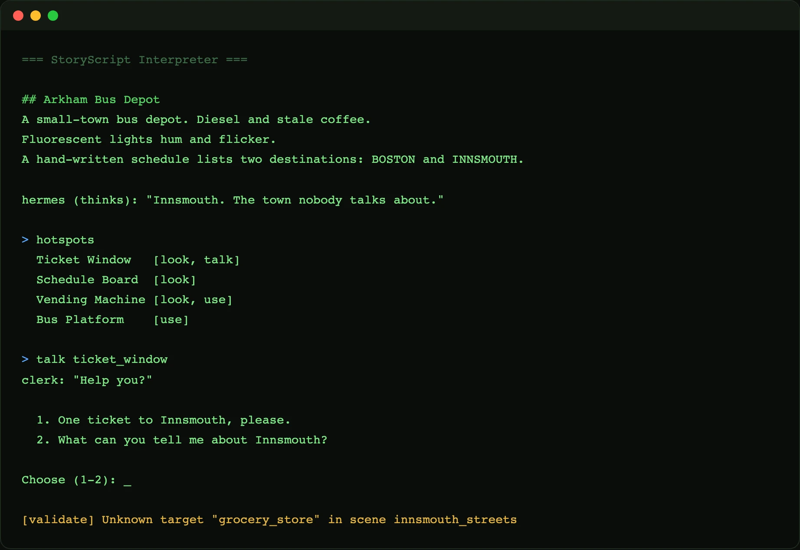

Problem
Two problems, one root. Writers should not have to learn JavaScript to write a story, and you cannot properly test a branching narrative when it is tangled inside game code and a renderer. Every playtest means launching the whole game and clicking through by hand, so most branches never get exercised and dead ends ship. The story needs to be its own thing: readable by a writer, executable on its own, and checkable by a machine.
What I Built
StoryScript is a small language and a direct interpreter for it. A .story file is plain text — scenes, hotspots, dialogue, choices, inventory, and flags — and the runtime reads it and executes line by line with a state machine. There is no JSON, no compiled AST, no build step between writing and playing. It runs in a terminal REPL, and because it is headless it is also the test harness: the same engine that plays the game can validate it in CI.

.story file in the terminal — scene text, hotspots with their verbs, a dialogue with choices. The last line shows the validator catching a dangling goto (Unknown target "grocery_store") with no game running.The Language
A scene declares a place, what is in it, and what the player can do with each thing. Verbs (LOOK, TALK, USE) hang off hotspots; a goto (->) jumps to a dialogue or another scene.
SCENE bus_station
location: "Arkham Bus Depot"
DESCRIPTION
A small-town bus depot. Diesel and stale coffee.
END
HOTSPOT ticket_window
name: "Ticket Window"
LOOK
"Scratched plexiglass. Someone carved 'DONT GO'."
END
TALK
-> buy_ticket
END
END
ENDDialogue is a branching tree. Choices can set flags and hand the player items, and the state machine remembers all of it, so a later scene can react to what happened here.
DIALOGUE buy_ticket
clerk: "Innsmouth? You sure?"
CHOICE
> "One ticket."
SET going_to_innsmouth
GIVE bus_ticket
-> END
> "Never mind."
-> END
END
END
TRIGGER board_bus
REQUIRE HAS(bus_ticket)
CUTSCENE ...CI for storytelling
This is the payoff of keeping the story headless. The whole game is a state machine you can drive without graphics, so an agent can play the entire narrative in seconds — walk every scene, take every dialogue branch, pick up every item — and do it a hundred times over. The interpreter validates the story graph as it loads and reports broken links (Unknown target "grocery_store") before anyone plays. Roughly 6,500 lines of StoryScript author the full four-act game, and all of it can be exercised in CI without rendering a pixel.
Bring your own UI
The engine emits what happened — scene entered, line spoken, choice offered, item taken — and does not care what draws it. A terminal renders it as text; a React or Phaser layer renders it as a graphic adventure. My graphic-adventure system, Anima, is one such UI sitting on top of StoryScript. The language and the pixels stay independent.
Technical Decisions
- Make the story its own plain-text language, not JSON or engine code — a writer can read and edit it, and an LLM can draft it.
- Interpret directly with a state machine, no intermediate AST or build step — the source is the runtime.
- Keep the engine headless so it doubles as the test harness — play and validate through the same code path.
- Separate the engine from the renderer with an event stream, so terminal, React, and Phaser are all just subscribers.
- Validate the story graph on load and surface dangling gotos and unreachable scenes as warnings.
What This Proves
StoryScript is language-design judgment applied to a real problem: I built a small DSL, its parser, and its runtime, then wrote a whole game in it. It shows the instinct to make the right thing the format — readable for writers, generable for models, executable and testable for machines — instead of bolting a story onto a game engine.
Public Evidence
- The interpreter playing a real
.storyfile in the terminal, shown above. - The validator catching a dangling goto with no game running.
- A direct-interpretation state machine with parser tests.
- ~6,500 lines of StoryScript authoring a four-act game, testable headless.
- Full source, the REPL, and the CI harness available on request.
Boundary
The examples here use original or public-domain material. Unreleased story text and the private game repo stay closed until published; the language, runtime, and REPL can be walked through live.